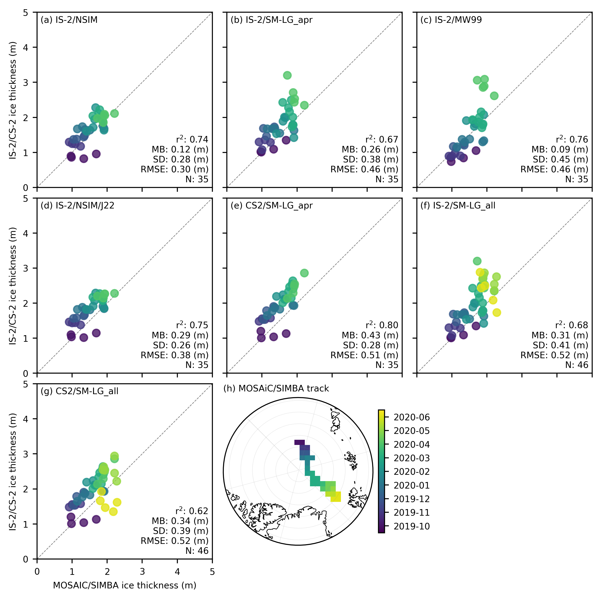
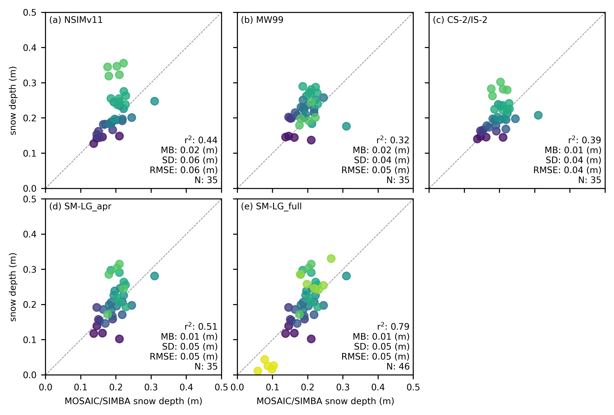

Comparisons with MOSAiC SIMBA buoys#
Summary: In this notebook, we produce comparisons of all-season monthly gridded ICESat-2 and CryoSat-2 sea ice thickness data with snow depth and sea ice thickness obtained from MOSAiC/SIMBA buoys in 2019-2020.
Version history: Version 1 (05/01/2025)
Import notebook dependencies#
import xarray as xr
import pandas as pd
import numpy as np
import itertools
import pyproj
from netCDF4 import Dataset
import scipy.interpolate
from utils.read_data_utils import read_book_data, read_IS2SITMOGR4 # Helper function for reading the data from the bucket
from utils.plotting_utils import compute_gridcell_winter_means, interactiveArcticMaps, interactive_winter_mean_maps, interactive_winter_comparison_lineplot # Plotting
from scipy import stats
import datetime
# Plotting dependencies
import cartopy.crs as ccrs
from textwrap import wrap
import hvplot.pandas
import holoviews as hv
import matplotlib.pyplot as plt
from matplotlib.axes import Axes
from cartopy.mpl.geoaxes import GeoAxes
GeoAxes._pcolormesh_patched = Axes.pcolormesh # Helps avoid some weird issues with the polar projection
%config InlineBackend.figure_format = 'retina'
import matplotlib as mpl
# Interpolating/smoothing packages
from scipy.interpolate import griddata
from scipy.spatial import KDTree
from astropy.convolution import convolve
from astropy.convolution import Gaussian2DKernel
mpl.rcParams['figure.dpi'] = 200 # Sets figure size in the notebook
# Remove warnings to improve display
import warnings
warnings.filterwarnings('ignore')
mpl.rcParams.update({
"font.size": 7, # Match typical LaTeX 10pt font
"axes.labelsize": 7,
"xtick.labelsize": 7,
"ytick.labelsize": 7,
"legend.fontsize": 7
})
grid_size=100
ib_agg_str='mean'
extra='simba'
int_str='_int'
# Define the variables to compare
variables_ice = [
'ice_thickness'+int_str,
'ice_thickness_sm'+int_str+'_apr',
'ice_thickness_mw99'+int_str,
'ice_thickness_j22'+int_str,
'ice_thickness_cs2_ubris_apr',
'ice_thickness_sm'+int_str,
'ice_thickness_cs2_ubris'
]
# Define the variables to compare
variables_snow = [
'snow_depth'+int_str,
'snow_depth_mw99'+int_str,
'cs2is2_snow_depth',
'snow_depth_sm'+int_str+'_apr',
'snow_depth_sm'+int_str
]
variables_all = variables_ice+variables_snow
# Load the all-season wrangled dataset
IS2_CS2_allseason = xr.open_dataset('./data/book_data_allseason.nc')
print("Successfully loaded all-season wrangled dataset")
Successfully loaded all-season wrangled dataset
out_proj = 'EPSG:3411'
out_lons = IS2_CS2_allseason.longitude.values
out_lats = IS2_CS2_allseason.latitude.values
mapProj = pyproj.Proj("+init=" + out_proj)
xptsIS2, yptsIS2 = mapProj(out_lons, out_lats)
# Limit to MOSAiC/SIMBA time period
IS2_CS2_allseason = IS2_CS2_allseason.sel(time=slice('2019-10-01', '2020-06-30'))
# Create new variables with October-April time period filter
variables = ['snow_depth_sm'+int_str, 'ice_thickness_sm'+int_str, 'ice_thickness_cs2_ubris']
for var in variables:
# Create mask for October through April
# Month values: October (10) through December (12) and January (1) through April (4)
month_mask = (IS2_CS2_allseason.time.dt.month >= 10) | (IS2_CS2_allseason.time.dt.month <= 4)
# Create new variable with '_apr' suffix
new_var_name = f"{var}_apr"
IS2_CS2_allseason[new_var_name] = IS2_CS2_allseason[var].where(month_mask)
# COARSEN TO MATCH 100 KM RESOLUTION OF IB
if grid_size==100:
# First count valid values in each block
valid_counts = IS2_CS2_allseason.notnull().coarsen(y=4, x=4, boundary='trim').sum()
# Calculate means
means = IS2_CS2_allseason.coarsen(y=4, x=4, boundary='trim').mean()
# Mask means where count is less than minimum
IS2_CS2_allseason = means.where(valid_counts >= 4)
IS2_CS2_allseason
<xarray.Dataset>
Dimensions: (time: 9, y: 112, x: 76)
Coordinates:
* time (time) datetime64[ns] 2019-10-15 ... 2020...
* x (x) float32 -3.8e+06 -3.7e+06 ... 3.7e+06
* y (y) float32 5.8e+06 5.7e+06 ... -5.3e+06
longitude (y, x) float32 168.2 167.5 ... -10.81 -10.08
latitude (y, x) float32 31.47 31.85 ... 35.27 34.85
Data variables: (12/50)
crs (time) float64 nan nan nan ... nan nan nan
ice_thickness_sm (time, y, x) float32 nan nan nan ... nan nan
ice_thickness_unc (time, y, x) float32 nan nan nan ... nan nan
num_segments (time, y, x) float32 nan nan nan ... nan nan
mean_day_of_month (time, y, x) float32 nan nan nan ... nan nan
snow_depth_sm (time, y, x) float32 nan nan nan ... nan nan
... ...
cs2_sea_ice_type_UBRIS (time, y, x) float64 nan nan nan ... nan nan
cs2_sea_ice_density_UBRIS (time, y, x) float64 nan nan nan ... nan nan
cs2is2_snow_depth (time, y, x) float64 nan nan nan ... nan nan
snow_depth_sm_int_apr (time, y, x) float32 nan nan nan ... nan nan
ice_thickness_sm_int_apr (time, y, x) float32 nan nan nan ... nan nan
ice_thickness_cs2_ubris_apr (time, y, x) float64 0.0 0.0 0.0 ... nan nan
Attributes:
contact: Alek Petty (akpetty@umd.edu)
description: Aggregated IS2SITMOGR4 summer V0 dataset.
history: Created 20/12/23# Open SIMBA NetCDF file
file_path = '/Users/akpetty/Data/IS2-obs-comparison-data/simba_snow_ice_mosaic_on_is2_grid_'+str(grid_size)+'km.nc'
simba_data = xr.open_dataset(file_path)
simba_data = simba_data.rename({'date': 'time'})
simba_data = simba_data.transpose('y', 'x', 'time')
print(simba_data)
<xarray.Dataset>
Dimensions: (x: 76, y: 112, time: 269)
Coordinates:
lon (y, x) float32 ...
lat (y, x) float32 ...
* x (x) float32 -3.838e+06 -3.738e+06 ... 3.662e+06
* y (y) float32 5.838e+06 5.738e+06 ... -5.262e+06
* time (time) datetime64[ns] 2019-10-05 ... 2020-06-29
crs int32 ...
Data variables:
sea_ice_thickness_mean (y, x, time) float32 ...
sea_ice_thickness_median (y, x, time) float32 ...
snow_thickness_mean (y, x, time) float32 ...
snow_thickness_median (y, x, time) float32 ...
simba_data_monthly = simba_data.resample(time='MS').mean()
# Adjust time to middle (15th) of the month for plotting purposes (generally time defaults to the start of the month)
simba_data_monthly['time'] = simba_data_monthly['time'] + pd.Timedelta(days=14)
fig_width=6.8
fig_height=5.4
im1 = simba_data_monthly.sea_ice_thickness_mean.plot(x="lon", y="lat", col='time', transform=ccrs.PlateCarree(),
cmap="viridis", zorder=3, add_labels=False, col_wrap=4,
subplot_kws={'projection':ccrs.NorthPolarStereo(central_longitude=-45)},
cbar_kwargs={'pad':0.01,'shrink': 0.3,'extend':'both',
'label':'Sea ice thickness (m)', 'location':'bottom'},
vmin=0, vmax=5,
figsize=(fig_width, fig_height))
# Add map features to all subplots
i=0
for i, ax in enumerate(im1.axes.flatten()):
ax.coastlines(linewidth=0.15, color='black', zorder=2)
#ax.add_feature(cfeature.LAND, color='0.95', zorder=1)
ax.gridlines(draw_labels=False, linewidth=0.25, color='gray', alpha=0.7, linestyle='--', zorder=3)
ax.set_extent([-179, 179, 78, 90], crs=ccrs.
PlateCarree())
#ax.text(0.02, 0.93, panel_letters[i], transform=ax.transAxes, fontsize=7, va='bottom', ha='left')
#ax.set_title('', fontsize=8)
i+=1
#plt.subplots_adjust(wspace=0.01)
#plt.savefig('./figs/maps_summer_thickness_comparison.png', dpi=300, facecolor="white")
plt.show()
plt.close()
{kind=link}
times = simba_data_monthly.time.values
# Define a reference date (adjust as needed)
reference_date = np.datetime64('2019-10-01')
# Convert times to days since reference date
days_since_reference = (times - reference_date).astype('timedelta64[D]').astype(int)
shape = (len(times), simba_data_monthly.sea_ice_thickness_mean.y.shape[0], simba_data_monthly.sea_ice_thickness_mean.x.shape[0])
month_time = np.empty(shape)
month_time.fill(np.nan)
for i in range(len(times)):
valid_cells = ~np.isnan(simba_data_monthly['sea_ice_thickness_mean']).isel(time=i).values
month_time[i][valid_cells] = days_since_reference[i]
mean_simba_time = np.nanmean(month_time, axis=0)
# Plot months to check all looks right.
times
array(['2019-10-15T00:00:00.000000000', '2019-11-15T00:00:00.000000000',
'2019-12-15T00:00:00.000000000', '2020-01-15T00:00:00.000000000',
'2020-02-15T00:00:00.000000000', '2020-03-15T00:00:00.000000000',
'2020-04-15T00:00:00.000000000', '2020-05-15T00:00:00.000000000',
'2020-06-15T00:00:00.000000000'], dtype='datetime64[ns]')
reference_date = np.datetime64('2019-10-01') # Example reference date
# Initialize a dictionary to store validation results
validation_results = {}
# Calculate statistics and generate scatter plots for each variable
for var in variables_ice:
# Calculate statistics
IS2_var = IS2_CS2_allseason[var]
IB_var = simba_data_monthly['sea_ice_thickness_mean']
IB_time = simba_data_monthly['time']
# Initialize lists to store the stacked points
IB_comps_list = []
IS2_comps_list = []
IB_time_list = []
# Loop through the time dimension
for t in range(IS2_var.sizes['time']):
print('IS2 time', t, var)
IS2_var_time = IS2_var.isel(time=t)
IB_var_time = IB_var.isel(time=t)
#print('IB time', IB_var_time)
valid_mask = ~np.isnan(IS2_var_time.values) & ~np.isnan(IB_var_time.values)
IB_comps_list.append(IB_var_time.where(valid_mask).values.flatten()[~np.isnan(IB_var_time.where(valid_mask).values.flatten())])
IS2_comps_list.append(IS2_var_time.where(valid_mask).values.flatten()[~np.isnan(IS2_var_time.where(valid_mask).values.flatten())])
days_since_array = (IB_time.isel(time=t).values - reference_date).astype('timedelta64[D]').astype(int)
print(days_since_array)
IB_time_list.append([days_since_array]*len(IB_var_time.where(valid_mask).values.flatten()[~np.isnan(IB_var_time.where(valid_mask).values.flatten())]))
# Stack the points together
IB_comps = np.concatenate(IB_comps_list)
IS2_comps = np.concatenate(IS2_comps_list)
IB_time = np.concatenate(IB_time_list)
# Correlation Coeff
correlation = '%.02f' % (np.corrcoef(IS2_comps, IB_comps)[0, 1])
# Calculate mean bias
mean_bias = '%.02f' % (np.mean(IS2_comps - IB_comps))
# Calculate standard dev of differences
std_dev = '%.02f' % (np.std(IB_comps - IS2_comps))
# Calculate RMSE
rmse = '%.02f' % (np.sqrt(np.mean((IS2_comps - IB_comps) ** 2)))
# Store results
validation_results[var] = {
'r_str': correlation, 'mb_str': mean_bias, 'sd_str': std_dev, 'rmse': rmse,
'IB_comps': IB_comps, 'IS2_comps': IS2_comps,'IB_time': IB_time
}
# Print validation results
print(validation_results)
IS2 time 0 ice_thickness_int
14
IS2 time 1 ice_thickness_int
45
IS2 time 2 ice_thickness_int
75
IS2 time 3 ice_thickness_int
106
IS2 time 4 ice_thickness_int
137
IS2 time 5 ice_thickness_int
166
IS2 time 6 ice_thickness_int
197
IS2 time 7 ice_thickness_int
227
IS2 time 8 ice_thickness_int
258
IS2 time 0 ice_thickness_sm_int_apr
14
IS2 time 1 ice_thickness_sm_int_apr
45
IS2 time 2 ice_thickness_sm_int_apr
75
IS2 time 3 ice_thickness_sm_int_apr
106
IS2 time 4 ice_thickness_sm_int_apr
137
IS2 time 5 ice_thickness_sm_int_apr
166
IS2 time 6 ice_thickness_sm_int_apr
197
IS2 time 7 ice_thickness_sm_int_apr
227
IS2 time 8 ice_thickness_sm_int_apr
258
IS2 time 0 ice_thickness_mw99_int
14
IS2 time 1 ice_thickness_mw99_int
45
IS2 time 2 ice_thickness_mw99_int
75
IS2 time 3 ice_thickness_mw99_int
106
IS2 time 4 ice_thickness_mw99_int
137
IS2 time 5 ice_thickness_mw99_int
166
IS2 time 6 ice_thickness_mw99_int
197
IS2 time 7 ice_thickness_mw99_int
227
IS2 time 8 ice_thickness_mw99_int
258
IS2 time 0 ice_thickness_j22_int
14
IS2 time 1 ice_thickness_j22_int
45
IS2 time 2 ice_thickness_j22_int
75
IS2 time 3 ice_thickness_j22_int
106
IS2 time 4 ice_thickness_j22_int
137
IS2 time 5 ice_thickness_j22_int
166
IS2 time 6 ice_thickness_j22_int
197
IS2 time 7 ice_thickness_j22_int
227
IS2 time 8 ice_thickness_j22_int
258
IS2 time 0 ice_thickness_cs2_ubris_apr
14
IS2 time 1 ice_thickness_cs2_ubris_apr
45
IS2 time 2 ice_thickness_cs2_ubris_apr
75
IS2 time 3 ice_thickness_cs2_ubris_apr
106
IS2 time 4 ice_thickness_cs2_ubris_apr
137
IS2 time 5 ice_thickness_cs2_ubris_apr
166
IS2 time 6 ice_thickness_cs2_ubris_apr
197
IS2 time 7 ice_thickness_cs2_ubris_apr
227
IS2 time 8 ice_thickness_cs2_ubris_apr
258
IS2 time 0 ice_thickness_sm_int
14
IS2 time 1 ice_thickness_sm_int
45
IS2 time 2 ice_thickness_sm_int
75
IS2 time 3 ice_thickness_sm_int
106
IS2 time 4 ice_thickness_sm_int
137
IS2 time 5 ice_thickness_sm_int
166
IS2 time 6 ice_thickness_sm_int
197
IS2 time 7 ice_thickness_sm_int
227
IS2 time 8 ice_thickness_sm_int
258
IS2 time 0 ice_thickness_cs2_ubris
14
IS2 time 1 ice_thickness_cs2_ubris
45
IS2 time 2 ice_thickness_cs2_ubris
75
IS2 time 3 ice_thickness_cs2_ubris
106
IS2 time 4 ice_thickness_cs2_ubris
137
IS2 time 5 ice_thickness_cs2_ubris
166
IS2 time 6 ice_thickness_cs2_ubris
197
IS2 time 7 ice_thickness_cs2_ubris
227
IS2 time 8 ice_thickness_cs2_ubris
258
{'ice_thickness_int': {'r_str': '0.74', 'mb_str': '0.12', 'sd_str': '0.28', 'rmse': '0.30', 'IB_comps': array([0.98193747, 1.3332247 , 0.9682 , 1.69 , 0.9174715 ,
1.0861 , 1.0028571 , 1.2428334 , 1.0408412 , 1.3326416 ,
1.1301981 , 1.3536555 , 1.150357 , 1.5089091 , 1.2930555 ,
1.3691301 , 1.88 , 1.9133334 , 1.4140958 , 1.91 ,
1.600302 , 1.6416322 , 1.6712545 , 1.5922366 , 1.8354533 ,
1.756725 , 1.7873335 , 1.8900001 , 1.8584979 , 1.8809 ,
1.7239941 , 1.8902701 , 2.21 , 1.9221568 , 1.9327871 ],
dtype=float32), 'IS2_comps': array([0.86074996, 0.82118756, 0.8970625 , 0.9561875 , 1.2950624 ,
1.2416875 , 1.2494376 , 1.1737499 , 1.3706875 , 1.4408125 ,
1.3805001 , 1.4779376 , 1.6696875 , 1.6365001 , 1.7346876 ,
1.6530625 , 1.7544376 , 1.678125 , 1.6025625 , 1.6350625 ,
1.7136874 , 1.9438126 , 2.2780623 , 2.0418124 , 2.011375 ,
2.1116874 , 2.218875 , 2.0491874 , 1.939375 , 1.8810625 ,
1.9715624 , 1.8521249 , 2.1100624 , 2.08925 , 2.055 ],
dtype=float32), 'IB_time': array([ 14., 14., 14., 14., 45., 45., 45., 45., 75., 75., 75.,
75., 106., 106., 106., 106., 106., 106., 137., 137., 137., 137.,
137., 166., 166., 166., 166., 166., 166., 166., 197., 197., 197.,
197., 197.])}, 'ice_thickness_sm_int_apr': {'r_str': '0.67', 'mb_str': '0.26', 'sd_str': '0.38', 'rmse': '0.46', 'IB_comps': array([0.98193747, 1.3332247 , 0.9682 , 1.69 , 0.9174715 ,
1.0861 , 1.0028571 , 1.2428334 , 1.0408412 , 1.3326416 ,
1.1301981 , 1.3536555 , 1.150357 , 1.5089091 , 1.2930555 ,
1.3691301 , 1.88 , 1.9133334 , 1.4140958 , 1.91 ,
1.600302 , 1.6416322 , 1.6712545 , 1.5922366 , 1.8354533 ,
1.756725 , 1.7873335 , 1.8900001 , 1.8584979 , 1.8809 ,
1.7239941 , 1.8902701 , 2.21 , 1.9221568 , 1.9327871 ],
dtype=float32), 'IS2_comps': array([1.0080874, 1.0907574, 1.021357 , 1.3486643, 1.2988157, 1.355722 ,
1.0777647, 1.2867023, 1.6856971, 1.6805294, 1.4650555, 1.7279016,
1.6729609, 1.5486495, 1.6739283, 1.6832575, 1.7887474, 1.6277151,
1.5341434, 1.4213738, 1.8880606, 2.0068672, 1.9896995, 2.4270966,
2.494124 , 2.2772853, 2.1590285, 1.7842667, 1.7281208, 2.0049806,
3.1995554, 2.7082114, 2.3465853, 2.431447 , 2.5310898],
dtype=float32), 'IB_time': array([ 14., 14., 14., 14., 45., 45., 45., 45., 75., 75., 75.,
75., 106., 106., 106., 106., 106., 106., 137., 137., 137., 137.,
137., 166., 166., 166., 166., 166., 166., 166., 197., 197., 197.,
197., 197.])}, 'ice_thickness_mw99_int': {'r_str': '0.76', 'mb_str': '0.09', 'sd_str': '0.45', 'rmse': '0.46', 'IB_comps': array([0.98193747, 1.3332247 , 0.9682 , 1.69 , 0.9174715 ,
1.0861 , 1.0028571 , 1.2428334 , 1.0408412 , 1.3326416 ,
1.1301981 , 1.3536555 , 1.150357 , 1.5089091 , 1.2930555 ,
1.3691301 , 1.88 , 1.9133334 , 1.4140958 , 1.91 ,
1.600302 , 1.6416322 , 1.6712545 , 1.5922366 , 1.8354533 ,
1.756725 , 1.7873335 , 1.8900001 , 1.8584979 , 1.8809 ,
1.7239941 , 1.8902701 , 2.21 , 1.9221568 , 1.9327871 ],
dtype=float32), 'IS2_comps': array([0.73721445, 0.8419704 , 0.85700285, 1.0518391 , 0.89411235,
0.971731 , 0.8940155 , 0.901606 , 1.1697778 , 1.244451 ,
1.1195308 , 1.2041793 , 1.1607754 , 1.3799618 , 1.3716297 ,
1.294538 , 1.29974 , 1.334163 , 1.9080083 , 2.0766368 ,
1.9108772 , 1.7438858 , 1.814107 , 1.9343971 , 2.1570053 ,
1.8692715 , 2.0025828 , 1.811841 , 1.7036635 , 1.784462 ,
3.0604033 , 2.853929 , 2.6143298 , 2.8892367 , 3.0879316 ],
dtype=float32), 'IB_time': array([ 14., 14., 14., 14., 45., 45., 45., 45., 75., 75., 75.,
75., 106., 106., 106., 106., 106., 106., 137., 137., 137., 137.,
137., 166., 166., 166., 166., 166., 166., 166., 197., 197., 197.,
197., 197.])}, 'ice_thickness_j22_int': {'r_str': '0.75', 'mb_str': '0.29', 'sd_str': '0.26', 'rmse': '0.38', 'IB_comps': array([0.98193747, 1.3332247 , 0.9682 , 1.69 , 0.9174715 ,
1.0861 , 1.0028571 , 1.2428334 , 1.0408412 , 1.3326416 ,
1.1301981 , 1.3536555 , 1.150357 , 1.5089091 , 1.2930555 ,
1.3691301 , 1.88 , 1.9133334 , 1.4140958 , 1.91 ,
1.600302 , 1.6416322 , 1.6712545 , 1.5922366 , 1.8354533 ,
1.756725 , 1.7873335 , 1.8900001 , 1.8584979 , 1.8809 ,
1.7239941 , 1.8902701 , 2.21 , 1.9221568 , 1.9327871 ],
dtype=float32), 'IS2_comps': array([1.0367172, 1.0166816, 1.1001568, 1.1471493, 1.4627246, 1.4400535,
1.4352741, 1.3788229, 1.5655245, 1.6378045, 1.5806005, 1.6682122,
1.8214006, 1.8094447, 1.8814881, 1.8256041, 1.9107449, 1.8430387,
1.8199189, 1.8571658, 1.9122732, 2.071161 , 2.2886798, 2.1681497,
2.1508222, 2.1939597, 2.272525 , 2.159037 , 2.0817876, 2.0723827,
2.2016554, 2.1447463, 2.2780657, 2.259172 , 2.2651546],
dtype=float32), 'IB_time': array([ 14., 14., 14., 14., 45., 45., 45., 45., 75., 75., 75.,
75., 106., 106., 106., 106., 106., 106., 137., 137., 137., 137.,
137., 166., 166., 166., 166., 166., 166., 166., 197., 197., 197.,
197., 197.])}, 'ice_thickness_cs2_ubris_apr': {'r_str': '0.80', 'mb_str': '0.43', 'sd_str': '0.28', 'rmse': '0.51', 'IB_comps': array([0.98193747, 1.3332247 , 0.9682 , 1.69 , 0.9174715 ,
1.0861 , 1.0028571 , 1.2428334 , 1.0408412 , 1.3326416 ,
1.1301981 , 1.3536555 , 1.150357 , 1.5089091 , 1.2930555 ,
1.3691301 , 1.88 , 1.9133334 , 1.4140958 , 1.91 ,
1.600302 , 1.6416322 , 1.6712545 , 1.5922366 , 1.8354533 ,
1.756725 , 1.7873335 , 1.8900001 , 1.8584979 , 1.8809 ,
1.7239941 , 1.8902701 , 2.21 , 1.9221568 , 1.9327871 ],
dtype=float32), 'IS2_comps': array([1.00723941, 1.03748572, 1.20065998, 1.13125519, 1.48110107,
1.53179246, 1.55467889, 1.57623086, 1.53032018, 1.90460905,
1.78521335, 1.86525709, 1.64644114, 1.82634847, 1.76727778,
1.87710543, 1.9386547 , 1.93004922, 2.1918771 , 2.52524562,
2.23774827, 2.11420235, 2.09892928, 2.00882488, 2.14710742,
2.33132642, 2.46281955, 2.40666191, 2.54577547, 2.63719263,
2.13444311, 2.28983182, 2.8584301 , 2.48501824, 2.54490709]), 'IB_time': array([ 14., 14., 14., 14., 45., 45., 45., 45., 75., 75., 75.,
75., 106., 106., 106., 106., 106., 106., 137., 137., 137., 137.,
137., 166., 166., 166., 166., 166., 166., 166., 197., 197., 197.,
197., 197.])}, 'ice_thickness_sm_int': {'r_str': '0.68', 'mb_str': '0.31', 'sd_str': '0.41', 'rmse': '0.52', 'IB_comps': array([0.98193747, 1.3332247 , 0.9682 , 1.69 , 0.9174715 ,
1.0861 , 1.0028571 , 1.2428334 , 1.0408412 , 1.3326416 ,
1.1301981 , 1.3536555 , 1.150357 , 1.5089091 , 1.2930555 ,
1.3691301 , 1.88 , 1.9133334 , 1.4140958 , 1.91 ,
1.600302 , 1.6416322 , 1.6712545 , 1.5922366 , 1.8354533 ,
1.756725 , 1.7873335 , 1.8900001 , 1.8584979 , 1.8809 ,
1.7239941 , 1.8902701 , 2.21 , 1.9221568 , 1.9327871 ,
1.8782691 , 2.21 , 1.9292712 , 2.2113335 , 1.9022751 ,
2.2740002 , 1.804813 , 1.9450202 , 2.1766667 , 1.8392425 ,
2.2833333 ], dtype=float32), 'IS2_comps': array([1.0080874, 1.0907574, 1.021357 , 1.3486643, 1.2988157, 1.355722 ,
1.0777647, 1.2867023, 1.6856971, 1.6805294, 1.4650555, 1.7279016,
1.6729609, 1.5486495, 1.6739283, 1.6832575, 1.7887474, 1.6277151,
1.5341434, 1.4213738, 1.8880606, 2.0068672, 1.9896995, 2.4270966,
2.494124 , 2.2772853, 2.1590285, 1.7842667, 1.7281208, 2.0049806,
3.1995554, 2.7082114, 2.3465853, 2.431447 , 2.5310898, 2.688375 ,
2.3585 , 2.8640623, 2.5396874, 2.79725 , 2.7539372, 2.8805628,
2.4964375, 2.085125 , 2.432125 , 1.7313125], dtype=float32), 'IB_time': array([ 14, 14, 14, 14, 45, 45, 45, 45, 75, 75, 75, 75, 106,
106, 106, 106, 106, 106, 137, 137, 137, 137, 137, 166, 166, 166,
166, 166, 166, 166, 197, 197, 197, 197, 197, 227, 227, 227, 227,
227, 227, 258, 258, 258, 258, 258])}, 'ice_thickness_cs2_ubris': {'r_str': '0.62', 'mb_str': '0.34', 'sd_str': '0.39', 'rmse': '0.52', 'IB_comps': array([0.98193747, 1.3332247 , 0.9682 , 1.69 , 0.9174715 ,
1.0861 , 1.0028571 , 1.2428334 , 1.0408412 , 1.3326416 ,
1.1301981 , 1.3536555 , 1.150357 , 1.5089091 , 1.2930555 ,
1.3691301 , 1.88 , 1.9133334 , 1.4140958 , 1.91 ,
1.600302 , 1.6416322 , 1.6712545 , 1.5922366 , 1.8354533 ,
1.756725 , 1.7873335 , 1.8900001 , 1.8584979 , 1.8809 ,
1.7239941 , 1.8902701 , 2.21 , 1.9221568 , 1.9327871 ,
1.8782691 , 2.21 , 1.9292712 , 2.2113335 , 1.9022751 ,
2.2740002 , 1.804813 , 1.9450202 , 2.1766667 , 1.8392425 ,
2.2833333 ], dtype=float32), 'IS2_comps': array([1.00723941, 1.03748572, 1.20065998, 1.13125519, 1.48110107,
1.53179246, 1.55467889, 1.57623086, 1.53032018, 1.90460905,
1.78521335, 1.86525709, 1.64644114, 1.82634847, 1.76727778,
1.87710543, 1.9386547 , 1.93004922, 2.1918771 , 2.52524562,
2.23774827, 2.11420235, 2.09892928, 2.00882488, 2.14710742,
2.33132642, 2.46281955, 2.40666191, 2.54577547, 2.63719263,
2.13444311, 2.28983182, 2.8584301 , 2.48501824, 2.54490709,
2.54685684, 2.93959107, 2.53112783, 2.45049142, 2.62967323,
2.2198122 , 1.66021865, 1.46573368, 1.35053732, 1.92529373,
1.61762398]), 'IB_time': array([ 14, 14, 14, 14, 45, 45, 45, 45, 75, 75, 75, 75, 106,
106, 106, 106, 106, 106, 137, 137, 137, 137, 137, 166, 166, 166,
166, 166, 166, 166, 197, 197, 197, 197, 197, 227, 227, 227, 227,
227, 227, 258, 258, 258, 258, 258])}}
# Create figure with subplots
fig = plt.figure(figsize=(6.8, 6.8)) # Square figure for 3x3 grid
gs = fig.add_gridspec(3, 3, hspace=0.06, wspace=0.04) # Changed to 3x3 grid
axes = []
for i in range(3):
for j in range(3):
if i == 2 and j == 1: # Move map to bottom right
# Create the cartopy map in the last position
ax = fig.add_subplot(gs[i, j], projection=ccrs.NorthPolarStereo(central_longitude=-45))
else:
ax = fig.add_subplot(gs[i, j])
axes.append(ax)
panel_labels = ['(a) IS-2/NSIM', '(b) IS-2/SM-LG_apr', '(c) IS-2/MW99', '(d) IS-2/NSIM/J22', '(e) CS2/SM-LG_apr', '(f) IS-2/SM-LG_all', '(g) CS2/SM-LG_all', '(h)']
# Configure the cartopy map in the last subplot
map_ax = axes[7] # Changed to last position (3x3=9, so index 8)
map_ax.set_extent([-180, 180, 77, 90], crs=ccrs.PlateCarree())
map_ax.coastlines(resolution='50m', color='black', linewidth=0.5)
map_ax.gridlines(draw_labels=False, linewidth=0.3, color='gray', alpha=0.5, linestyle=':')
# Add a circular boundary for the polar plot
theta = np.linspace(0, 2*np.pi, 100)
center, radius = [0.5, 0.5], 0.5
verts = np.vstack([np.sin(theta), np.cos(theta)]).T
circle = mpl.path.Path(verts * radius + center)
map_ax.set_boundary(circle, transform=map_ax.transAxes)
# Plot the sea ice thickness data
im = map_ax.pcolormesh(
simba_data_monthly.x,
simba_data_monthly.y,
mean_simba_time,
transform=ccrs.NorthPolarStereo(central_longitude=-45),
vmin=0,
vmax=270,
cmap='viridis',
)
cbar = map_ax.figure.colorbar(im, ax=map_ax, orientation='vertical',
pad=0.03, shrink=0.7)
# Create dates using pandas
start_date = pd.Timestamp('2019-10-01')
days = np.array([15, 45, 75, 105, 135, 165, 195, 225, 255])
dates = [start_date + pd.Timedelta(days=int(d)) for d in days]
labels = [d.strftime('%Y-%m') for d in dates]
# Set new ticks and labels
cbar.set_ticks(days)
cbar.set_ticklabels(labels)
# Add panel label for map
map_ax.annotate(f"{panel_labels[7]} MOSAiC/SIMBA track", xy=(0.0, 1.03),
xycoords='axes fraction',
horizontalalignment='left',
verticalalignment='bottom')
axes[8].set_visible(False) # Hide the 9th panel (bottom right)
# Process the other subplots
for i, option in enumerate(variables_ice):
if i < 7: # Process first 8 variables
ax = axes[i]
im = ax.scatter(validation_results[option]['IB_comps'], validation_results[option]['IS2_comps'],
c=validation_results[option]['IB_time'], alpha=0.8, vmin=0, vmax=270)
# Retrieve validation results for the current option
r_str = validation_results[option]['r_str']
mb_str = validation_results[option]['mb_str']
sd_str = validation_results[option]['sd_str']
n_str = str(len(validation_results[option]['IS2_comps']))
rmse = validation_results[option]['rmse']
# Annotate the plot with statistics
ax.annotate(f"r$^2$: {r_str} \nMB: {mb_str} (m)\nSD: {sd_str} (m)\nRMSE: {rmse} (m)\nN: {n_str}",
color='k', xy=(0.98, 0.02), xycoords='axes fraction',
horizontalalignment='right', verticalalignment='bottom')
# Combine panel label with option label
ax.annotate(f"{panel_labels[i]} ", xy=(0.02, 0.98),
xycoords='axes fraction', horizontalalignment='left', verticalalignment='top')
# Set x and y labels only for the leftmost and bottom plots
if i == 0:
ax.legend(frameon=False, loc="upper right")
if i % 3 == 0: # First column
ax.set_ylabel('IS-2/CS-2 ice thickness (m)')
else:
ax.set_yticklabels('')
if i >= 6: # Bottom row
ax.set_xlabel('MOSAIC/SIMBA ice thickness (m)')
else:
ax.set_xlabel('')
ax.set_xticklabels('')
ax.set_xlim([0, 5])
ax.set_ylim([0, 5])
lims = [
np.min([ax.get_xlim(), ax.get_ylim()]),
np.max([ax.get_xlim(), ax.get_ylim()]),
]
ax.plot(lims, lims, 'k--', linewidth=0.5, alpha=0.5, zorder=0)
ax.set_aspect('equal')
ax.set_xlim(lims)
ax.set_ylim(lims)
plt.subplots_adjust(left=0.065, right=0.98, top=0.98, bottom=0.09)
plt.savefig('./figs/MOSAIC_scatter_inccs2_'+ib_agg_str+'_'+str(grid_size)+'km_map'+extra+'2.pdf', dpi=300)
plt.show()
No artists with labels found to put in legend. Note that artists whose label start with an underscore are ignored when legend() is called with no argument.
{kind=link}

# Initialize a dictionary to store validation results
validation_results_snow = {}
# Calculate statistics and generate scatter plots for each variable
for var in variables_snow:
# Calculate statistics
IS2_var = IS2_CS2_allseason[var]
IB_var = simba_data_monthly['snow_thickness_mean']
IB_time = simba_data_monthly['time']
# Initialize lists to store the stacked points
IB_comps_list = []
IS2_comps_list = []
IB_time_list = []
# Loop through the time dimension
for t in range(IS2_var.sizes['time']):
IS2_var_time = IS2_var.isel(time=t)
IB_var_time = IB_var.isel(time=t)
valid_mask = ~np.isnan(IS2_var_time.values) & ~np.isnan(IB_var_time.values)
IB_comps_list.append(IB_var_time.where(valid_mask).values.flatten()[~np.isnan(IB_var_time.where(valid_mask).values.flatten())])
IS2_comps_list.append(IS2_var_time.where(valid_mask).values.flatten()[~np.isnan(IS2_var_time.where(valid_mask).values.flatten())])
days_since_array = (IB_time.isel(time=t).values - reference_date).astype('timedelta64[D]').astype(int)
print(days_since_array)
IB_time_list.append([days_since_array]*len(IB_var_time.where(valid_mask).values.flatten()[~np.isnan(IB_var_time.where(valid_mask).values.flatten())]))
# Stack the points together
IB_comps = np.concatenate(IB_comps_list)
IS2_comps = np.concatenate(IS2_comps_list)
IB_time = np.concatenate(IB_time_list)
# Correlation Coeff
correlation = '%.02f' % (np.corrcoef(IS2_comps, IB_comps)[0, 1])
# Calculate mean bias
mean_bias = '%.02f' % (np.mean(IS2_comps - IB_comps))
# Calculate standard dev of differences
std_dev = '%.02f' % (np.std(IS2_comps - IB_comps))
# Calculate RMSE
rmse = '%.02f' % (np.sqrt(np.mean((IS2_comps - IB_comps) ** 2)))
# Store results
validation_results_snow[var] = {
'r_str': correlation, 'mb_str': mean_bias, 'sd_str': std_dev, 'rmse': rmse, 'IB_comps': IB_comps, 'IS2_comps': IS2_comps, 'IB_time': IB_time
}
# Print validation results
print(validation_results_snow)
14
45
75
106
137
166
197
227
258
14
45
75
106
137
166
197
227
258
14
45
75
106
137
166
197
227
258
14
45
75
106
137
166
197
227
258
14
45
75
106
137
166
197
227
258
{'snow_depth_int': {'r_str': '0.44', 'mb_str': '0.02', 'sd_str': '0.06', 'rmse': '0.06', 'IB_comps': array([0.13708332, 0.1619679 , 0.14593333, 0.21 , 0.15358159,
0.19090185, 0.14571428, 0.15049998, 0.16987641, 0.21794605,
0.16413799, 0.18978116, 0.18664286, 0.21845455, 0.18083334,
0.20213781, 0.245 , 0.18666667, 0.21199134, 0.31 ,
0.19415672, 0.22210054, 0.19656365, 0.20855123, 0.22820054,
0.20411025, 0.22723332, 0.21000001, 0.18589242, 0.22254443,
0.17655203, 0.22176191, 0.21 , 0.17999999, 0.2027704 ],
dtype=float32), 'IS2_comps': array([0.127375 , 0.146125 , 0.14250001, 0.148625 , 0.1441875 ,
0.16625 , 0.1535625 , 0.1621875 , 0.1825625 , 0.1920625 ,
0.181875 , 0.19000001, 0.18425 , 0.197125 , 0.1833125 ,
0.1945 , 0.20118749, 0.18862501, 0.23468749, 0.24775 ,
0.2451875 , 0.2264375 , 0.19712499, 0.255 , 0.26325 ,
0.2375 , 0.2383125 , 0.2465 , 0.255375 , 0.27556252,
0.345125 , 0.35575 , 0.322875 , 0.319125 , 0.347 ],
dtype=float32), 'IB_time': array([ 14., 14., 14., 14., 45., 45., 45., 45., 75., 75., 75.,
75., 106., 106., 106., 106., 106., 106., 137., 137., 137., 137.,
137., 166., 166., 166., 166., 166., 166., 166., 197., 197., 197.,
197., 197.])}, 'snow_depth_mw99_int': {'r_str': '0.32', 'mb_str': '0.02', 'sd_str': '0.04', 'rmse': '0.05', 'IB_comps': array([0.13708332, 0.1619679 , 0.14593333, 0.21 , 0.15358159,
0.19090185, 0.14571428, 0.15049998, 0.16987641, 0.21794605,
0.16413799, 0.18978116, 0.18664286, 0.21845455, 0.18083334,
0.20213781, 0.245 , 0.18666667, 0.21199134, 0.31 ,
0.19415672, 0.22210054, 0.19656365, 0.20855123, 0.22820054,
0.20411025, 0.22723332, 0.21000001, 0.18589242, 0.22254443,
0.17655203, 0.22176191, 0.21 , 0.17999999, 0.2027704 ],
dtype=float32), 'IS2_comps': array([0.1457377 , 0.14462383, 0.14860633, 0.1371854 , 0.19920492,
0.20172931, 0.20258969, 0.19898888, 0.2076231 , 0.21506628,
0.21512261, 0.22409332, 0.25123927, 0.22598076, 0.23093876,
0.23789428, 0.25791958, 0.2288327 , 0.18386124, 0.17653808,
0.2100256 , 0.25143299, 0.2628981 , 0.27014735, 0.23946905,
0.27314484, 0.27084637, 0.28109092, 0.28990522, 0.28756726,
0.17950112, 0.20114309, 0.24511701, 0.19797975, 0.1921601 ],
dtype=float32), 'IB_time': array([ 14., 14., 14., 14., 45., 45., 45., 45., 75., 75., 75.,
75., 106., 106., 106., 106., 106., 106., 137., 137., 137., 137.,
137., 166., 166., 166., 166., 166., 166., 166., 197., 197., 197.,
197., 197.])}, 'cs2is2_snow_depth': {'r_str': '0.39', 'mb_str': '0.01', 'sd_str': '0.04', 'rmse': '0.04', 'IB_comps': array([0.13708332, 0.1619679 , 0.14593333, 0.21 , 0.15358159,
0.19090185, 0.14571428, 0.15049998, 0.16987641, 0.21794605,
0.16413799, 0.18978116, 0.18664286, 0.21845455, 0.18083334,
0.20213781, 0.245 , 0.18666667, 0.21199134, 0.31 ,
0.19415672, 0.22210054, 0.19656365, 0.20855123, 0.22820054,
0.20411025, 0.22723332, 0.21000001, 0.18589242, 0.22254443,
0.17655203, 0.22176191, 0.21 , 0.17999999, 0.2027704 ],
dtype=float32), 'IS2_comps': array([0.14052716, 0.14561097, 0.14752063, 0.14500227, 0.16629686,
0.16268317, 0.16354933, 0.16081002, 0.17370823, 0.16863975,
0.17829095, 0.17859212, 0.19268917, 0.19504046, 0.19765926,
0.19541582, 0.19788627, 0.19449733, 0.19796681, 0.20779865,
0.20210581, 0.21293368, 0.23857174, 0.23605735, 0.22620267,
0.234064 , 0.24159006, 0.22218647, 0.22483094, 0.2223228 ,
0.28305809, 0.27965067, 0.28188762, 0.26271893, 0.30230668]), 'IB_time': array([ 14., 14., 14., 14., 45., 45., 45., 45., 75., 75., 75.,
75., 106., 106., 106., 106., 106., 106., 137., 137., 137., 137.,
137., 166., 166., 166., 166., 166., 166., 166., 197., 197., 197.,
197., 197.])}, 'snow_depth_sm_int_apr': {'r_str': '0.51', 'mb_str': '0.01', 'sd_str': '0.05', 'rmse': '0.05', 'IB_comps': array([0.13708332, 0.1619679 , 0.14593333, 0.21 , 0.15358159,
0.19090185, 0.14571428, 0.15049998, 0.16987641, 0.21794605,
0.16413799, 0.18978116, 0.18664286, 0.21845455, 0.18083334,
0.20213781, 0.245 , 0.18666667, 0.21199134, 0.31 ,
0.19415672, 0.22210054, 0.19656365, 0.20855123, 0.22820054,
0.20411025, 0.22723332, 0.21000001, 0.18589242, 0.22254443,
0.17655203, 0.22176191, 0.21 , 0.17999999, 0.2027704 ],
dtype=float32), 'IS2_comps': array([0.11762539, 0.11873344, 0.1391613 , 0.10228331, 0.15356348,
0.15868938, 0.19176473, 0.1577397 , 0.14631365, 0.17105469,
0.18594867, 0.1675112 , 0.18413028, 0.2074498 , 0.19927108,
0.19584143, 0.19760156, 0.20631379, 0.24624977, 0.28113282,
0.22632478, 0.22602823, 0.23864146, 0.20794722, 0.19298336,
0.22036287, 0.2559521 , 0.2908581 , 0.2974863 , 0.26390123,
0.17188407, 0.24442428, 0.3149009 , 0.2854639 , 0.30362713],
dtype=float32), 'IB_time': array([ 14., 14., 14., 14., 45., 45., 45., 45., 75., 75., 75.,
75., 106., 106., 106., 106., 106., 106., 137., 137., 137., 137.,
137., 166., 166., 166., 166., 166., 166., 166., 197., 197., 197.,
197., 197.])}, 'snow_depth_sm_int': {'r_str': '0.79', 'mb_str': '0.01', 'sd_str': '0.05', 'rmse': '0.05', 'IB_comps': array([0.13708332, 0.1619679 , 0.14593333, 0.21 , 0.15358159,
0.19090185, 0.14571428, 0.15049998, 0.16987641, 0.21794605,
0.16413799, 0.18978116, 0.18664286, 0.21845455, 0.18083334,
0.20213781, 0.245 , 0.18666667, 0.21199134, 0.31 ,
0.19415672, 0.22210054, 0.19656365, 0.20855123, 0.22820054,
0.20411025, 0.22723332, 0.21000001, 0.18589242, 0.22254443,
0.17655203, 0.22176191, 0.21 , 0.17999999, 0.2027704 ,
0.21865901, 0.26666668, 0.23103751, 0.24466667, 0.17894828,
0.19800001, 0.07782975, 0.10329495, 0.09833334, 0.08681819,
0.05833333], dtype=float32), 'IS2_comps': array([0.11762539, 0.11873344, 0.1391613 , 0.10228331, 0.15356348,
0.15868938, 0.19176473, 0.1577397 , 0.14631365, 0.17105469,
0.18594867, 0.1675112 , 0.18413028, 0.2074498 , 0.19927108,
0.19584143, 0.19760156, 0.20631379, 0.24624977, 0.28113282,
0.22632478, 0.22602823, 0.23864146, 0.20794722, 0.19298336,
0.22036287, 0.2559521 , 0.2908581 , 0.2974863 , 0.26390123,
0.17188407, 0.24442428, 0.3149009 , 0.2854639 , 0.30362713,
0.2460625 , 0.3305625 , 0.24231249, 0.25425 , 0.2859375 ,
0.257875 , 0.0439375 , 0.0261875 , 0.0161875 , 0.02575 ,
0.01125 ], dtype=float32), 'IB_time': array([ 14, 14, 14, 14, 45, 45, 45, 45, 75, 75, 75, 75, 106,
106, 106, 106, 106, 106, 137, 137, 137, 137, 137, 166, 166, 166,
166, 166, 166, 166, 197, 197, 197, 197, 197, 227, 227, 227, 227,
227, 227, 258, 258, 258, 258, 258])}}
# Update snow_labels to include all 5 variables
snow_labels=['NSIMv11', 'MW99', 'CS-2/IS-2', 'SM-LG_apr', 'SM-LG_full'] # Adjust these labels as needed
# Create 2x3 subplot grid
fig, axes = plt.subplots(2, 3, figsize=(6.8, 4.5),
gridspec_kw={'hspace': 0.06, 'wspace': 0.05})
axes = axes.flatten() # Flatten the 2D array of axes for easy iteration
panel_labels = ['(a)', '(b)', '(c)', '(d)', '(e)'] # Updated panel labels
for i, option in enumerate(variables_snow):
ax = axes[i]
ax.scatter(validation_results_snow[option]['IB_comps'],
validation_results_snow[option]['IS2_comps'],
c=validation_results_snow[option]['IB_time'],
alpha=0.8, vmin=0, vmax=270)
# Retrieve validation results for the current option
r_str = validation_results_snow[option]['r_str']
mb_str = validation_results_snow[option]['mb_str']
sd_str = validation_results_snow[option]['sd_str']
n_str = str(len(validation_results_snow[option]['IS2_comps']))
rmse = validation_results_snow[option]['rmse']
# Annotate the plot with statistics
ax.annotate(f"r$^2$: {r_str} \nMB: {mb_str} (m)\nSD: {sd_str} (m)\nRMSE: {rmse} (m)\nN: {n_str}",
color='k', xy=(0.98, 0.02), xycoords='axes fraction',
horizontalalignment='right', verticalalignment='bottom')
# Combine panel label with option label
ax.annotate(f"{panel_labels[i]} "+snow_labels[i], xy=(0.02, 0.98),
xycoords='axes fraction', horizontalalignment='left',
verticalalignment='top')
# Set x and y labels
if i == 0:
ax.legend(frameon=False, loc="upper right")
if i in [0, 3]: # Left column
ax.set_ylabel('snow depth (m)')
else:
ax.set_yticklabels('')
if i in [3, 4]: # Bottom row
ax.set_xlabel('MOSAIC/SIMBA snow depth (m)')
else:
ax.set_xlabel('')
ax.set_xticklabels('')
ax.set_xlim([0, 0.5])
ax.set_ylim([0, 0.5])
lims = [
np.min([ax.get_xlim(), ax.get_ylim()]),
np.max([ax.get_xlim(), ax.get_ylim()]),
]
ax.plot(lims, lims, 'k--', linewidth=0.5, alpha=0.5, zorder=0)
ax.set_aspect('equal')
ax.set_xlim(lims)
ax.set_ylim(lims)
# Hide the unused subplot (bottom right)
axes[5].set_visible(False)
plt.subplots_adjust(left=0.06, right=0.98, top=0.98, bottom=0.09)
plt.savefig('./figs/MOSAIC_scatter_snow_inccs2_'+ib_agg_str+'_'+str(grid_size)+'km'+extra+'.pdf', dpi=300)
plt.show()
No artists with labels found to put in legend. Note that artists whose label start with an underscore are ignored when legend() is called with no argument.
{kind=link}
